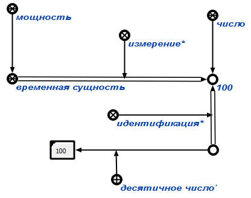

Команда нахождения процента временных сущностейпредназначена для поиска и подсчета всех всех временных сущностей. Единственным аргументом, который подставляется автоматически, является множество временных сущностей. Результатом выполнения запроса является вывод на экран мощности множества временных сущностей. Например:
